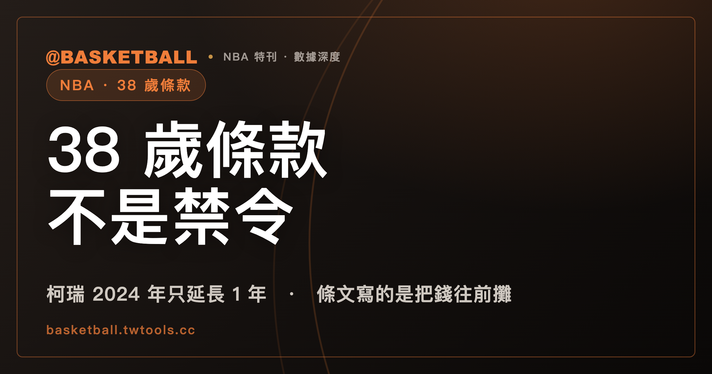

38 歲條款不禁止長約，它把錢往前攤：柯瑞 2024 年只延長得了 1 年
美國時間 2026 年 8 月 29 日，柯瑞（Stephen Curry）重新取得跟金州勇士（Golden State Warriors）簽延長約的資格；截至台灣時間 8 月 31 日，ESPN 與 CBS Sports 的 2 份交易紀錄都還沒有他的條目，2 份紀錄的最新一筆交易都停在 8 月 29 日。這已經是他第 2 次碰到同一條規則——2024 年 8 月 29 日那次，他只延長得了 1 年、6,260 萬美元，原因寫在 NBA 勞資協議（CBA）的「38 歲條款（Over-38 Rule）」裡，而條文原文寫的東西，跟大家轉述的不太一樣。

美國時間 2026 年 8 月 29 日，柯瑞（Stephen Curry）重新取得跟金州勇士（Golden State Warriors）簽延長約的資格；截至台灣時間 8 月 31 日，ESPN 與 CBS Sports 的 2 份交易紀錄都還沒有他的條目，2 份紀錄的最新一筆交易都停在 8 月 29 日。這已經是他第 2 次碰到同一條規則——2024 年 8 月 29 日那次，他只延長得了 1 年、6,260 萬美元，原因寫在 NBA 勞資協議（CBA）的「38 歲條款（Over-38 Rule）」裡，而條文原文寫的東西，跟大家轉述的不太一樣。
美國時間 8 月 29 日資格重新開啟，ESPN 與 CBS Sports 的交易紀錄裡都還沒有柯瑞的名字
資格開啟日是美國時間 2026 年 8 月 29 日，週六，台灣時間已經是 8 月 30 日。媒體推估他這次最多可以簽 2 年、總值 1.367 億美元，第 1 年薪資上限 6,570 萬美元——這是 ESPN 專欄作家 Bobby Marks 依聯盟薪資上限規則推算出來的數字，不是柯瑞已經簽下的金額。
截至台灣時間 2026 年 8 月 31 日，ESPN 與 CBS Sports 的 2 份交易紀錄都沒有柯瑞的條目，2 份紀錄的最新一筆交易都停在 8 月 29 日。
資格重新開啟之前，勇士管理層公開講過的話，都是信心喊話。總管 Mike Dunleavy Jr. 8 月 11 日接受 ESPN 記者 Anthony Slater 訪問時說：「He hasn't [said any different] …… That's always been the message.」（他沒有〔說過不一樣的話〕……這一直都是同一套說法）。老闆 Joe Lacob 與 Dunleavy 同一週（8 月 14 日）又接受另一個節目訪問，把柯瑞會離隊的傳言形容成不實臆測，2 人都強調沒有任何跡象顯示柯瑞會離開勇士。
柯瑞現行合約 2026-27 球季年薪約 6,259 萬美元，是這份合約的最後一年，也是他 NBA 生涯第 18 個球季。
2024 年 8 月 29 日，柯瑞的延長約只簽了 1 年，ESPN 說是 38 歲條款擋的
2 年前的同一天，2024 年 8 月 29 日（台灣時間 8 月 30 日），柯瑞和勇士簽下 1 年、6,260 萬美元的延長約，把他留在勇士到 2026-27 球季。
這筆金額不是球團公布的。是柯瑞的經紀人奧斯丁（Jeff Austin）告訴 ESPN 記者 Adrian Wojnarowski 的；球團當時只公開確認「簽了 1 年延長約」這件事本身，沒有自己公布金額。這個小細節值得記住——後面會看到，同一筆錢在不同報導裡，寫法還不只一種。
ESPN 當時的報導解釋了為什麼只能簽 1 年：「eligible to sign only a one-year extension this offseason due to the NBA's over-38 rule」（由於 NBA 的 38 歲條款，他這個休賽季只能簽下 1 年延長約）。
CBA 原文裡沒有禁止字樣，寫的是薪資分攤
38 歲條款寫在 2023 年 7 月版 CBA 的 Article VII 第 3(a)(2) 條。條文定義「Over 38 Contract」：一份合約、延長約或重議約，自簽署日起算，涵蓋 4 個或以上球季，且其中 1 個以上球季開始在球員滿 38 歲之後，就構成 Over 38 Contract。判斷球季是否開始在 38 歲之後，條文規定一律視為 10 月 1 日開始。
條文規定的效果，不是禁止簽約。是把落在 38 歲之後那幾個球季的薪資，按比例往前面幾個薪資上限年度分攤認列，會擠壓球隊的薪資空間。
CBA 全文「Over 38」出現的 15 處、前後各 30 行，沒有一句「shall not」「prohibited」「may not」跟 Over 38 Contract 一起出現。唯一找到的一句，講的是簽下 Over 38 Contract 的球員「不算合格老將自由球員」這個身分認定問題，不是禁止簽約。
ESPN 把這條規則的效果講成：會讓球隊沒辦法對屆時已滿或將滿 38 歲的球員，開出 4 年以上的合約——這是媒體對規則實際效果的白話講法，不是條文逐字寫的禁止句。分攤認列會擠壓薪資空間，實務上等於嚇阻球隊簽長約，這一點沒錯；只是「嚇阻」是這個分攤機制造成的效果，不是條文逐字寫出來的字眼。
柯瑞 2024 年多簽 1 年是 3 季，多簽 2 年就跨過 4 季門檻
這一節的算式，是拿 CBA 條文交叉套算出來的，不是條文本身逐字寫出來的結論。
柯瑞生日是 1988 年 3 月 14 日，2026 年 3 月滿 38 歲。2024 年 8 月簽約時，他原本那份 2021 年簽的合約還剩 2024-25、2025-26 這 2 個球季。
如果那次只加 1 年（2026-27），合計球季是 2024-25、2025-26、2026-27，總共 3 季，沒有跨過「4 季以上」這條門檻，不構成 Over 38 Contract。如果加 2 年（再加上 2027-28），合計就變成 4 季，而且 2026-27 與 2027-28 都始於 2026 年 3 月之後，構成 Over 38 Contract，第 4 季起的薪資就要開始分攤認列。差 1 年，就是這條線的兩邊。這就是柯瑞 2024 年只延長得了 1 年的原因。
順帶可以解釋，為什麼這次的資格窗口剛好是 2026 年 8 月 29 日——2 年前的同一天，柯瑞簽下了那份 1 年延長約；CBA 另有一條規定，涵蓋 3 到 4 個球季的合約，要等到簽署後第 2 週年才能再延長。2024 年 8 月 29 日往後 2 年，正好是 2026 年 8 月 29 日。這段推算同樣是拿 CBA 條文交叉套算出來的。
詹姆斯 2022 年也只簽了 2 年，一樣被 38 歲條款擋住
可以拿來對照的例子是詹姆斯（LeBron James）。他在 2022 年 8 月 17 日與湖人達成 2 年、9,710 萬美元的延長約，其中 2024-25 球季是球員選項。ESPN 記者在報導正文自己寫下了因果句：「is limited to signing a two-year extension because he will be 38 or older」（因為他已滿或超過 38 歲，只能簽 2 年延長約）。
詹姆斯現在效力費城 76 人（Philadelphia 76ers），是他生涯第 4 支球隊，這份轉隊的完整經過本站另有專文整理。同一波休賽季異動裡，喬治（Paul George）也從 76 人被交易到波士頓塞爾提克（Boston Celtics），換來 Jaylen Brown，這筆交易與其他休賽季動向可以參考本站的整理。
柯瑞 18 個球季的年薪，從 271 萬美元到 6,259 萬美元
這是他 NBA 生涯第 18 個球季。逐季薪資有幾個轉折值得記：
2012 年那份 4 年、4,400 萬美元的延長約，是傷病折價——柯瑞在簽約前一季因腳踝傷勢缺陣 56 場，續約前的季前賽腳踝又再度受傷，這份合約被認為是考量腳踝耐用度風險後的相對低薪。2013-14 到 2016-17 這 4 個球季的年薪加起來，正好是 4,400 萬美元整。
2017 年那份 5 年、2.01 億美元的合約，ESPN 稱他是第 1 位跨過 2 億美元門檻的球星。2021 年那份 4 年、2.15 億美元的延長約，讓他成為 NBA 史上第 1 位簽過 2 份 2 億美元以上合約的球員——這兩句都是 ESPN 原文的說法。
下表所有金額都是 Spotrac 與 HoopsHype 2 家薪資資料庫的統計數字，不是聯盟或球團公告的官方數字。18 季裡有 15 季 2 家逐美元一致；2011-12、2020-21 這 2 季有實質差異，2024-25 相差 1 美元，這 3 季 2 個數字都列出。
| 球季 | 年薪（美元） | 備註 |
|---|---|---|
| 2009-10 | 2,710,560 | 新人年 |
| 2010-11 | 2,913,840 | |
| 2011-12 | Spotrac 2,508,901／HoopsHype 3,117,120 | 封館縮水賽季；Spotrac 為按比例折算的實付現金，HoopsHype 為原合約排定薪資 |
| 2012-13 | 3,958,742 | 新人約第 4 年球隊選項，不是後面那份延長約 |
| 2013-14 | 9,887,642 | 4 年 4,400 萬美元延長約年 1 |
| 2014-15 | 10,629,213 | 延長約年 2 |
| 2015-16 | 11,370,786 | 延長約年 3 |
| 2016-17 | 12,112,359 | 延長約年 4；4 季加總 44,000,000 整 |
| 2017-18 | 34,682,550 | 5 年 2.01 億美元合約年 1 |
| 2018-19 | 37,457,154 | |
| 2019-20 | 40,231,758 | |
| 2020-21 | Spotrac 40,491,877／HoopsHype 43,006,362 | 2 家不一致，原因不明 |
| 2021-22 | 45,780,966 | 2.01 億美元合約年 5 |
| 2022-23 | 48,070,014 | 2021 年延長約年 1 |
| 2023-24 | 51,915,615 | |
| 2024-25 | Spotrac 55,761,216／HoopsHype 55,761,217 | 相差 1 美元，原因不明 |
| 2025-26 | 59,606,817 | 2021 年延長約年 4 |
| 2026-27 | 62,587,158 | 2024 年簽的 1 年延長約，尚未開打 |
逐年表最後一列的 62,587,158 美元，就是柯瑞現行合約的年薪；2024 年簽約當天的報導寫成「1 年、6,260 萬美元」，那是四捨五入後的整數，指的是同一筆錢，不是另一份合約。
破 5 億美元的只有 2 人，還是好幾人，要看算到哪一天
Spotrac 對每個球員都會算出兩種「生涯場上收入」：一種是已經真的入帳的現金，一種是把現有合約打完之後的推算總值。這兩種數字常常沒被標明就混著引用，是這類排行榜最常見的地雷。
先看已入帳這一類。統計到 2025-26 球季結束（Spotrac 排行頁的篩選器基準），已經真的突破 5 億美元的只有 2 人：詹姆斯，5 億 8,137 萬 5,548 美元；杜蘭特（Kevin Durant），5 億 113 萬 5,653 美元。柯瑞排第 3，是 4 億 7,014 萬 1,507 美元，還沒到。
| 排名 | 球員 | 生涯場上收入（已入帳，統計至 2025-26 球季結束） |
|---|---|---|
| 1 | 詹姆斯 | 581,375,548 美元 |
| 2 | 杜蘭特 | 501,135,653 美元 |
| 3 | 柯瑞 | 470,141,507 美元 |
| 4 | James Harden | 411,670,071 美元 |
| 5 | 喬治 | 406,203,976 美元 |
| 6 | Chris Paul | 404,526,572 美元 |
| 7 | Kawhi Leonard | 375,772,011 美元 |
| 8 | Jimmy Butler | 366,174,318 美元 |
| 9 | Anthony Davis | 364,454,284 美元 |
| 10 | Damian Lillard | 364,166,141 美元 |
這張表是 Spotrac 一家的口徑。用 HoopsHype 另一個獨立資料庫重算同一批人，數字不一樣：詹姆斯 5.839 億美元、杜蘭特 5.118 億美元、柯瑞 4.732 億美元、喬治 4.08 億美元——連「他到底已經領了多少」這個問題，都有 2 個不同的答案，差距從幾百萬到超過千萬美元不等。這個落差全篇只講這一次。
如果把「現有合約打完」的推算金額也算進去，達標的人數馬上變多——這是另一套算法，跟已經真的拿到手的錢是兩回事。柯瑞如果打完 2026-27 球季，推算生涯場上收入會到 5 億 3,272 萬 8,665 美元，已經超過杜蘭特現在的已入帳金額，但還不到詹姆斯的已入帳金額。台灣媒體轉引這類排行榜時，常常沒有分清楚這兩種口徑，把已經到手的錢和還沒到手的錢混進同一張表裡。
2024 年 8 月 29 日那天，ESPN 一篇報導寫柯瑞會是第 4 位突破 5 億美元的球員（詹姆斯、喬治、杜蘭特之後）；同一天，ESPN 另一位記者 Bobby Marks 的說法被 Bleacher Report 轉述成第 3 位（只算詹姆斯、杜蘭特、柯瑞）。這兩種說法出自 ESPN 內部同一天的兩篇稿子，各自附著各自的日期並存。
把 17 個球季的年薪逐季加起來，會得到 4 億 7,009 萬 10 美元；比 Spotrac 列出的生涯總額少 5 萬 1,497 美元。這筆差額，正好是 Spotrac 頁面上 2024-25 那一列單獨列出的「NBA Cup」欄位金額——季中錦標賽的現金獎金。這只證明 Spotrac 這一家的算法把季中錦標賽獎金也算進生涯場上收入，其他網站不一定比照辦理。
排行榜上還有一項按球隊拆分的欄位：柯瑞的 4 億 7,014 萬 1,507 美元，全部來自同一支球隊——金州勇士。對照詹姆斯待過 3 支球隊、杜蘭特待過 5 支球隊。
如果柯瑞真的簽下新約，ESPN 提過一種假設情況：他有機會成為 NBA 史上第 1 位生涯場上收入突破 6 億美元的球員。這是媒體的假設語氣，不是已經發生的事。
目前還查不到的事
2012 年那份 4 年 4,400 萬美元延長約，確切的簽約日期查不到當時的一手報導，只知道是 2012 年。
2020-21 球季，2 家薪資資料庫差了約 250 萬美元，兩邊都沒有說明原因。
2021 年那份延長約的精確總額，3 份來源給出 3 個不同的數字，但彼此差距只有 1 到 2 美元，幾乎完全一致，原因不明。
柯瑞最終會不會簽下新約、什麼時候簽、簽多少——這些合約細節，勇士管理層目前沒有公開講過；他們公開講過的，是柯瑞的留隊意願。
常見問題
38 歲條款是什麼？
寫在 2023 年 7 月版 CBA 的 Article VII 第 3(a)(2) 條，正式名稱是 Over 38 Rule。一份合約如果自簽署日起算涵蓋 4 個或以上球季，且其中 1 個以上球季開始在球員滿 38 歲之後，就構成 Over 38 Contract，落在 38 歲之後那幾季的薪資，要按比例往前面幾個薪資上限年度分攤認列。
柯瑞 2024 年為什麼只能簽 1 年延長約？
依 CBA 條文交叉推算，他 2024 年 8 月簽約時原合約還剩 2 個球季，加 1 年是 3 季，沒有跨過「4 季以上」的門檻；加 2 年會變成 4 季，構成 Over 38 Contract。差 1 年，就是這條線的兩邊。
柯瑞現在到底簽了沒？
截至台灣時間 2026 年 8 月 31 日，ESPN 與 CBS Sports 的 2 份交易紀錄裡都沒有柯瑞的條目，2 份紀錄的最新一筆交易都停在 8 月 29 日。
這一次柯瑞最多可以簽多少錢？
媒體推估上限是 2 年、總值 1.367 億美元，第 1 年薪資上限 6,570 萬美元。這是 ESPN 專欄作家 Bobby Marks 依薪資上限規則推算出來的數字，不是已經簽下的金額。
柯瑞現行合約什麼時候到期？
2026-27 球季結束。這是他 2024 年 8 月簽下的那份 1 年延長約，年薪約 6,259 萬美元。
柯瑞生涯場上收入總共領了多少？
統計到 2025-26 球季結束，Spotrac 給出的數字是 4 億 7,014 萬 1,507 美元，全部來自金州勇士這一支球隊。這個數字不含代言收入。
已經破 5 億美元的 NBA 球員有誰？
以已入帳現金計算，統計到 2025-26 球季結束，只有詹姆斯和杜蘭特 2 人突破 5 億美元。柯瑞排第 3，還沒到；如果把現有合約打完的推算值算進去，會多出幾位球員，但那是另一套算法。
資格窗口為什麼剛好是 2026 年 8 月 29 日？
CBA 規定涵蓋 3 到 4 個球季的合約，要等到簽署後第 2 週年才能再延長。柯瑞 2024 年 8 月 29 日簽下延長約，往後 2 年正好是 2026 年 8 月 29 日。這段推算是拿條文交叉套算出來的，CBA 原文沒有把這個答案直接寫出來。
38 歲條款是不是禁止球隊簽 4 年以上的長約？
不是。CBA 全文所有提到 Over 38 Contract 的段落裡，找不到任何禁止性語句。條文規定的效果是把後段薪資按比例往前分攤認列，會擠壓球隊的薪資空間，實務上等於嚇阻，但沒有一條寫成禁止簽約的句子。